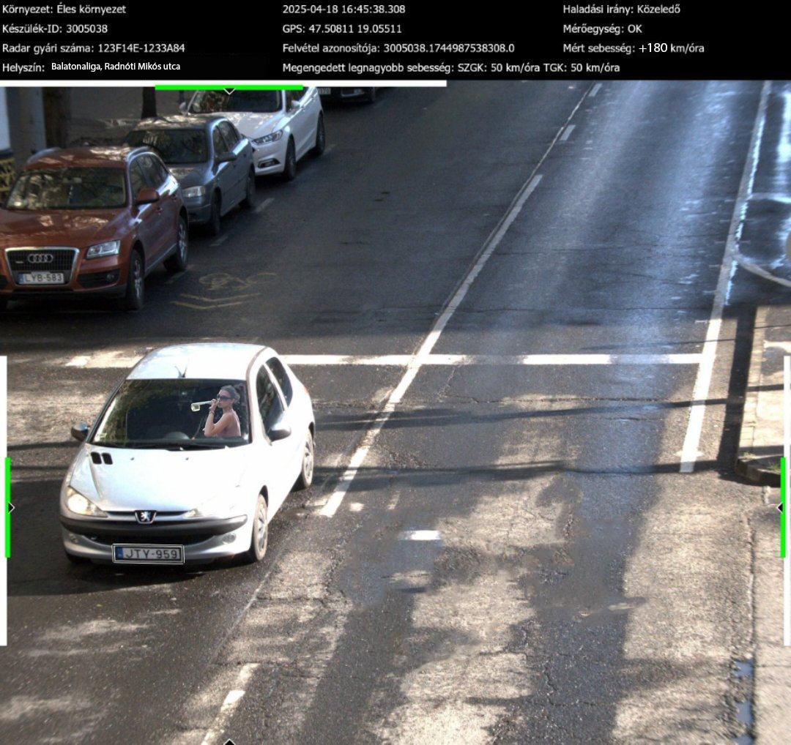
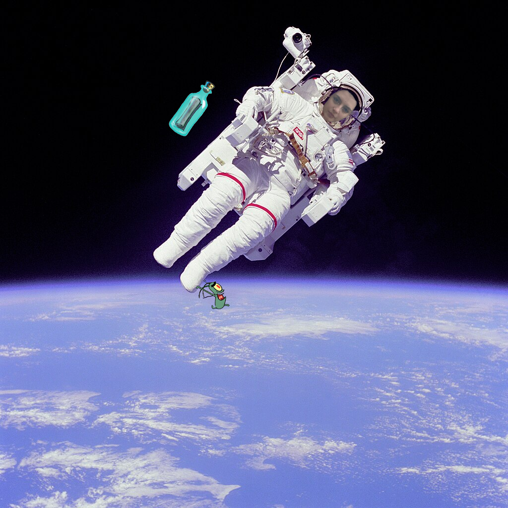
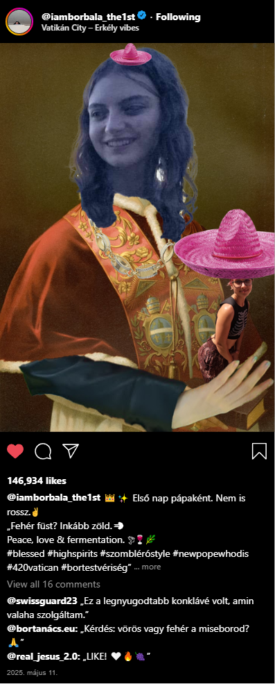

„Csak egy pohár bort ittam!”
„Csak egy pohár bort ittam!” – H. Emília 120 km/h-val száguldott túl gyorsan, majd végigszelte a
kéktúrát egy Suzukival

Szombat este különös közlekedési jelenségre lettek figyelmesek a rendőrök, amikor egy Suzuki Swift
hangrobbanás közepette átszáguldott a traffipax előtt – 70 helyett 190 km/h-val. A jármű mögött lila
LED-csíkok vibráltak, a tetőn egy karácsonyi égősor villogott, miközben a rádióból állítólag a Highway
to Hell szólt.
A rendőrök üldözőbe vették H. Emíliát, aki azonban nem egy szokványos úton menekült: valahogy sikerült
letérnie az aszfaltról, és rátalált a kéktúra országos gyalogösvényére. Onnantól kezdve a kis Suzuki
erdőn-mezőn, túrabotok, bakancsos turisták és vadlesek között hasított – állítólag egy ponton egy medvét
is megelőzött.
kalandnak akkor lett vége, amikor az autó kifogyott a benzinből valahol a Bükk szívében, egy kilátónál.
A rendőrök megkérdezték, ivott-e alkoholt, mire H. Emília szemrebbenés nélkül azt válaszolta:
„Csak egy pohár bort ittam. Talán kettőt. De az egyik deci sem volt egész!”
A rendőrség a járművet lefoglalta, a túraösvényt pedig ideiglenesen átminősítették ralipályává. Az ügyben
eljárás indult, de az internet népe már most kampányt indított a „Suzuki Dakarra 2026” jelszóval.
Szemtanú: „Azt hittem, UFO, de csak egy Suzuki volt...”
A helyszínen tartózkodó Gáspár Ernő, aki éppen a kéktúra 14. szakaszán próbált egy szelfit készíteni a
naplementében, így emlékezett vissza a történtekre:
„Először csak egy furcsa morajlást hallottam. A madarak felrebbentek, a mókusok elájultak, és a GPS-em
újraindult. Azt hittem, földrengés vagy UFO, de aztán megláttam a Suzukit, ahogy átvágott a fák között.
Én ott ültem a farönkön, a paprikás szalámimmal, amikor hirtelen elsüvített mellettem. Volt egy
pillanat, amikor konkrétan megcsinálta a kéktúra egyik fahídján az ugratást. Komolyan mondom, Fast and
Furious: Mátrai Retúr élő adásban!”
Ernő elmondása szerint Emília vezetés közben állítólag egy szívószálas borosüveget szorongatott, miközben
„mintha énekelt volna, valami Kispált, de lehet, hogy csak a kipufogó szólt furán.”
„Aztán mikor kifogyott a benzin, csak kiszállt, körbenézett, és azt mondta: 'Ez itt a Prédikálószék?
Mert a nevét már értem.' Hát én ott helyben eldobtam a túrabotom.”
A rendőröknek Ernő felajánlotta, hogy újra berajzolja a kéktúra útvonalát, immár autósoknak is, de ezt a
hatóságok egyelőre nem kommentálták.
„A Föld túl józan ehhez. Irány a Mars, ott még nem ismerik a Borkő-problémát!”
H. Emília ellopta a tökéletes bor receptjét – az űrbe menekült egy rakétává alakított boroshordóval

Ahogy a hatóságok már épp kezdtek volna megnyugodni a kéktúrás száguldás után, újabb fejlemény sokkolta a
közvéleményt: H. Emília nemcsak a sebesség határait feszegette, hanem a tudományét is. Legújabb
akciójában állítólag betört egy titkos pincészet laborjába, ahol ellopta a tökéletes bor receptjét – egy
vörösbor és szénsavas málnaszörp precíz kombinációját, amely állítólag egy korty után képes elérni a
borkóstolók megvilágosodását.
A biztonsági kamerák felvételei szerint Emília nemes egyszerűséggel egy parafatömként álcázta magát, és
úgy jutott be az épületbe. A lopás után az udvaron várakozó, boroshordóból barkácsolt rakétába szállt
be, melyen a „Merlot One” felirat díszelgett. A kilövés állítólag a következő szavakkal történt meg:
„A Föld túl józan ehhez. Irány a Mars, ott még nem ismerik a Borkő-problémát!”
A rakéta sikeresen elhagyta a légkört, és a NASA egyik műholdja rögzítette, ahogy a fedélzeti
hűtőládából egy palackot kihúzva Emília a súlytalanság állapotában koccint önmagával.
A rendőrség tanácstalan. A honvédség egyetlen hivatalos közleménye annyi volt:
„Űrüldözést nem vállalunk. Sok sikert az ENSZ-nek.”
Közben több gasztroblog már azt találgatja, hogy a recept visszakerül-e valaha a Földre, vagy a galaxis
egy új borszektája született meg – élén egy alkoholgőzös űrhajósnővel, aki csak „egy pohár bort ivott”.
I. Borbála, a Megszentelt Merlot Őrzője
H. Emíliát pápává választották – a konklávé összetévesztette a marihuánafüstöt a fehér füsttel – új neve: I. Borbála, a Megszentelt Merlot Őrzője

Az esemény, amelyre senki sem számított (de valójában már mindenki várt), ma reggel vált hivatalossá: H. Emíliát pápává választotta a bíborosi konklávé – egyhangú szavazással, miután a szavazócédulákat véletlenül egy kancsó fröccsbe ejtették.
A világ döbbenten figyelte, amikor a Vatikánban váratlanul fehér füst szállt fel, jelezve, hogy a bíborosi konklávé új pápát választott. Csakhogy – mint később kiderült – nem a hagyományos kéményből, hanem a Szent Péter tér melletti kis parkból jött a füst, ahol H. Emília épp egyetlen hatalmas marihuánás cigarettát szívott, miközben valamiért egy szombléró kalapot viselt és hangosan nevetett a galambokra és gázégőn próbált forralt bort készíteni a döntés tiszteletére. A hívek a téren lelkesen tapsoltak, amikor bejelentették az új egyházfőt, aki nem a hagyományos fehér ruhában jelent meg, hanem egy hordó alakú miseruhában, oldalán szőlőfürt-mintákkal, fején pedig egy parafa-dugóból készült tiarával.
A bíborosok, akik már napok óta füstmentesen konklávéztak (a tűzvédelmi szabályzat miatt), azt hitték, ez isteni jel, és egyhangúan megszavazták a járókelőnek hitt, füstölő fejű nő pápává emelését.
Új nevét is azonnal bejelentette:
„Én vagyok I. Borbála, a Megszentelt Merlot Őrzője, a Másnaposságok Megbocsátója, és a Koccintások Szent Védőszentje.”
Pápai rendelete szerint a Vatikán zöld területein hivatalosan is lehet majd „spirituális aromaterápiás kertészkedést” folytatni, a keresztelővizekbe pedig egy kis lime-mentát is kevernek az élmény javítása érdekében, ezek mellett első bullája a "De Vino Sanctissimo" címet viseli, és kötelezővé tenné minden mise végén a „Békesség poharával” való koccintást. Az új liturgikus naptárban egyelőre három új ünnepet vezetett be:
- A Szűz Szőlő Napja
- A Csodálatos Vörös Fermentáció Ünnepe
- A Nagy Kékszőlő-Hétfő
A konklávé azóta tagadja, hogy hibáztak volna, egyik bíboros csak ennyit mondott:
„Az Úr útjai kifürkészhetetlenek, de most illatosabbak, mint valaha.”
A Vatikán sajtóirodája rövid közleményben reagált:
„Őszentsége máris új reformokat tervez, többek között a gyóntatószékbe sajttálak telepítését.”
A pápa, aki űrből jött, marihuánával tért meg és sombréróban uralkodik
Miután a kéktúra útvonalát ralipályának nézve végigszáguldott egy feltuningolt Suzukival, H. Emília a hatóságok elől űrbe menekült, miután ellopta a tökéletes bor titkos receptjét. A meneküléshez egy rakétává átalakított tölgyfa boroshordót használt, amit kizárólag palackprés segítségével hajtott. Útját e szavakkal indította:
„A világ még nem áll készen az aromás igazságra.”
A fedélzeten szőlőmagpárnával, parfümös kannásborral és Bob Marley CD-kkel felszerelkezve orbitális pályára állt – legalábbis egy darabig. Ám mikor a Nemzetközi Űrállomás fedélzeti Wi-Fi-jéről megtudta, hogy időközben a bíborosok új pápát keresnek, azonnal visszaindult a Földre, hogy „rendbe tegye a liturgiát”.
A NASA eközben továbbra is vizsgálja, hogyan jutott vissza a Földre az űrből – egyes jelentések szerint egy dugóhúzóra szerelt ejtőernyővel landolt a Szent Péter téren.